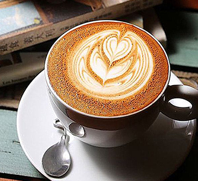
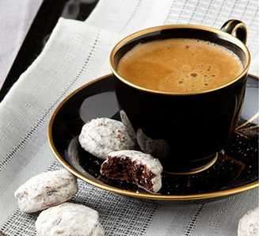

卡布奇诺咖啡的味道很好，但它的名称来历却更有学问，一直是欧美研究文字变迁的最佳体材。 Cappuccino此字的历史，足以说明一个字常常会因为看来像某样东西， 最后被引申成其它字义， 远远超出造字者原先用意听来似乎蛮复杂的。创设于一五二五年以后的圣芳济教会Capuchin)的修士都穿著褐色道袍，头戴一顶尖尖帽子，圣芳济教会传到意大利时, 当地人觉得修士服饰很特殊，就给他们取个Cappuccino的名字， 此字的意大利文是指僧侣所穿宽松长袍和小尖帽，源自意大利文"头巾"即Cappuccino。
然而，老人爱喝咖啡，发觉浓缩咖啡、牛奶和奶泡混合后，颜色就像是修士所穿的深褐色道袍，于是灵机一动，就给牛奶加咖啡又有尖尖奶泡的饮料，取名为卡布奇诺(Cappuccino). 英文最早使用此字的时间在一九四八年当时旧金山一篇报导率先介绍卡布奇诺饮料，一直到1990年以后, 才成为世人耳熟能详的咖啡饮料。应该可以这么说Cappuccino咖啡这个字， 源自圣芳济教会(Capuchin)和意大利文头巾(Cappucio)，相信Cappuccino的原始造字者，做梦也没料到僧侣的道袍最后会变成一种咖啡饮料名称。卡布奇诺咖啡是意大利咖啡的一种变化，即在偏浓的咖啡上。
其实，拿铁（Latte）在意大利语里是“牛奶”的意思，如果你点一杯“拿铁”，那么服务生只会给你上一杯牛奶。而意大利语的Caffè Latte指的才是拿铁。现在很多冷饮店都会推出自己的“拿铁”系列，像“红茶拿铁”“抹茶拿铁”等等，其实就是奶茶而并没有咖啡的成分。
拿铁咖啡是意大利浓缩咖啡(Espresso)与牛奶的经典混合，意大利人也很喜欢把拿铁作为早餐的饮料。意大利人早晨的厨房里，照得到阳光的炉子上通常会同时煮着咖啡和牛奶。喝拿铁的意大利人，与其说他们喜欢意大利浓缩咖啡，不如说他们喜欢牛奶，也只有Espresso才能给普普通通的牛奶带来让人难以忘怀的味道。
摩卡咖啡其历史要追溯到咖啡的起源。它是由意大利浓缩咖啡、巧克力酱、鲜奶油和牛奶混合而成，摩卡得名于有名的摩卡港。十五世纪，整个中东非咖啡国家向外运输业不兴盛，也门摩卡是当时红海附近主要输出一个商港，当时咖啡主要是集中到摩卡港再向外输出的非洲咖啡，都被统称摩卡咖啡。而新兴的港口虽然代替了摩卡港的地位，但是摩卡港时期摩卡咖啡的产地依然保留了下来，这些产地所产的咖啡豆，仍被称为摩卡咖啡豆。
巧克力通常会以巧克力糖浆的形式添加，但某些咖啡售卖系统便会以即溶巧克力粉取代。有时，打起了的奶油、可可粉，和棉花糖都会加在上面用来加重咖啡的香味和作为装饰之用。 和意式卡布奇诺(Cappuccino) 不一样，摩卡咖啡上面是没有鲜奶泡沫的。取而代之，摩卡咖啡上面通常是一些打起了的奶油和肉桂粉或者可可粉其中之一。也有可能加入葵蜜饯粉在表面作为装饰并且增加风味。